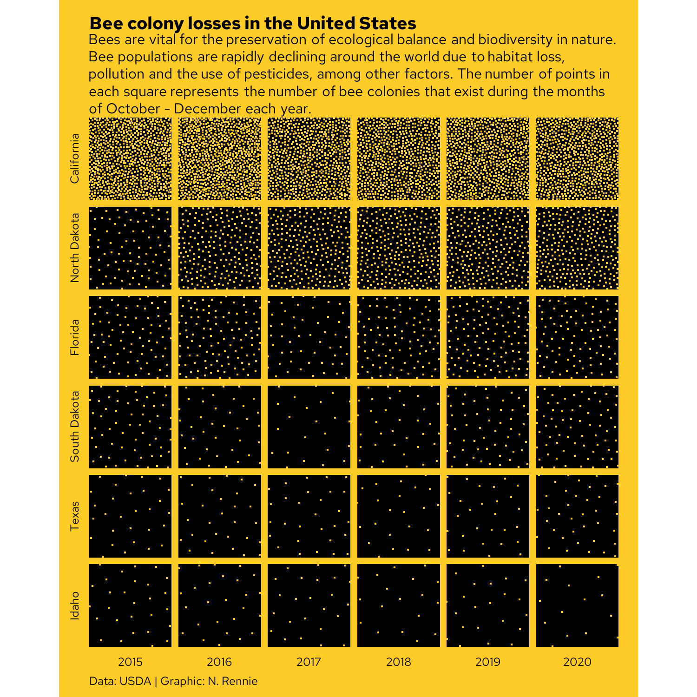

4 Bee colony losses: visualizing quantities with Poisson disk sampling
In this chapter, we’ll learn how to explore patterns in missing data, install R packages that aren’t available on CRAN, find out how to perform Poisson disk sampling, and create plots that are faceted by two variables.
By the end of this chapter, you’ll be able to:
- Get a quick overview of a dataset as a heatmap, and visualize missing data;
- Re-purpose a dot density plot, typically used for geographic data, to show trends over time as an alternative to bar charts; and
- Use simulation to generate the required dots, and create another custom chart type using just the geometries available in
ggplot2.
We begin by loading the packages required in this chapter.
We’ll be using ggplot2 for plotting, and ggtext for text styling as we’ve done in previous chapters, with dplyr and tidyr used for preparing the data downloaded with tidytuesdayR. Again, sysfonts and showtext are used for loading and rendering different fonts. In this chapter, we’ll be using two packages that haven’t been mentioned yet:
-
visdat: for creating heatmaps showing information about entire datasets, including missing data. -
poissoned: for performing Poisson disk sampling.
4.1 Data
As a major pollinator, bees are a vitally important part of our planet’s ecosystem. However, their numbers are in decline due to factors including habitat loss, pesticide use, and diseases (Brown, Mark J.F. and Paxton, Robert J. 2009). The United States Department of Agriculture (USDA) annually publishes data on honey bee colonies, which includes information about the number of colonies, the size of colonies, the percentage of colonies lost or added, and factors that have been identified as colony health stressors (United States Department of Agriculture: Economics, Statistics and Market Information System 2022).
The USDA honey bee colony data was used as a TidyTuesday (R4DS Online Learning Community 2023) data set in January 2022 (after being suggested by Georgios Karamanis), and so can be loaded in using the tidytuesdayR package:
tuesdata <- tt_load("2022-01-11")
colony <- tuesdata$colony
stressor <- tuesdata$stressorSince this version of the data is based on the 2021 release, it includes data up to June 2021. If you want to work with a more recent publication of the data, it can be obtained from usda.library.cornell.edu/concern/publications/rn301137d.
Two different data sets are included. The first, colony, contains information about the number and size of bee colonies in each US state per year since 2015. The second, stressor, contains information about different sources of health stressors for bee colonies and what percentage of colonies are affected by these stressors, again for different states and time periods.
4.2 Exploratory work
In this chapter, we’ll focus on the colony data, where we’ll try to build a picture of how bee colony numbers are changing over time.
4.2.1 Data exploration
Let’s start by looking at a quick box plot of how the number of colonies (colony_n) is changing over time, using the base R boxplot() function:
boxplot(
colony_n ~ year,
data = colony,
horizontal = TRUE,
xlab = "Number of bee colonies",
ylab = NULL
)Figure 4.1 doesn’t actually give us much information - except to suggest the distribution of the number of colonies is highly skewed and to suggest there are quite a few high values being classified as outliers. These outliers force the main section of the box plots to be squashed on the left of the plot, making it difficult to tell if much is changing on average each year. This is also a more general problem with box plots. There are many examples of data that illustrate the insufficiency of summary statistics, with Anscombe’s quartet (Anscombe 1973) being perhaps the most famous example. Box plots are essentially just summary statistics in disguise. Different data with identical box plots can actually come from very different distributions (Matejka and Fitzmaurice 2017).
Let’s start by trying to understand what’s causing these outliers. Are they real values? Are they mistakes in the data? Or have we made an incorrect assumption about the data? To understand this a bit better, let’s zoom in on one year, 2020, and look at the number of colonies in each state to understand which states the largest outliers relate to.
Though there are a few states (California, Florida, and North Dakota) with a much higher number of colonies, the main issue is that one of the states is the entirety of the United States i.e. the sum of all of the other values. You can also see from Figure 4.2 that not all states are included individually - an "Other States" category is also included instead which groups some states (and perhaps regions).
It’s unfortunately not uncommon for a column name to suggest one thing (e.g. each value relates to a state), but for that column to actually include other values as well (e.g. a country). If you’re ever naming columns (especially for data you’ll share with other people) choose appropriate column names to avoid confusion. For example, region would be a more appropriate column name here.
The other aspect of our data that box plots don’t tell us about is the missingness. Box plots only plot what’s there, not what’s not there. It’s especially important to remember this step since base R graphics don’t warn you about NA values in the way that ggplot2 (Wickham 2016) does. So how do we plot data that doesn’t exist?
The visdat package (Tierney 2017) is an excellent way to take a quick look at your data. It includes the vis_miss() function which, as the name suggests, allows you to get a quick visualization of which values are missing. To avoid creating an overwhelmingly large plot, we’ll start by visualising just the data for one state. We can use the subset() function from base R to obtain just the data for Alabama.
You may notice that the column names in the plot generated by vis_miss() in Figure 4.3 are rotated and this causes the right-most column name to run off the edge of the chart area. There are two solutions that can help with this problem:
- Use the
abbreviate_vars()function fromvisdatwhich abbreviates column names, and makes them less likely to exceed the available space. - Exploit the fact that the plot output from
vis_miss()is made withggplot2. This means we can use thetheme()function to extend the space available in the plot’s right margin.
colony_AL |>
abbreviate_vars(min_length = 8) |>
vis_miss() +
theme(plot.margin = margin(r = 25))In Figure 4.4, the rows are ordered in time, and you can see that there is no particular pattern appearing. The colony_reno_pct column has the most missing data, and that there a short time period where all data (other than the time and state) is missing. If you were to recreate this visualization for other states, you would see a similar pattern.
Data is unavailable for all states during the period April-June 2019. This suggests that the data is not simply randomly missing, but there was perhaps a persistent data collection issue during this time period. Though it cannot be seen in Figure 4.4, there is also (implicitly) missing data for the end of the last year in the data. This is due to the time when the data is reported, with annual data releases happening in August. This means we need to be careful with taking averages across years, as data is not complete for all years.
For this chapter, we’re not going to dive into methods for modelling, imputing, or removing missing values in data as that’s a very big topic on its own. But whether or not you are explicitly addressing missing values, it’s important to be aware of whether there are missing values, consider what aspect of the data collection processes might have caused them, and the impact this has on what conclusions you can draw.
Instead, we’ll limit our visualization to a quarter for which we have complete data e.g. perhaps only looking at annual trends in the "January-March" time period, though this approach does still have its limitations. The data is recorded quarterly, so there are four options for us to choose from: "January-March", "April-June", "July-September", or "October-December". Here, we’ll focus on data for "October-December". The reason for this choice is because this time period is regarded as the start of the seasonal cycle for honey bees colonies, and the “condition of the colony at this time of year greatly affects its prosperity for the next year” (Mid-Atlantic Apiculture Research and Extension Consortium 2024).
By default, the visdat packages assumes that missing data is encoded as NA. This is not always true - especially when you’re working with data that’s been processed by other software before you receive it. It’s not uncommon for missing values to be encoded using values such as "", " ", 99, 999, -, or 0. The naniar package (Tierney and Cook 2023) is very useful for summarizing and wrangling missing values. The replace_with_na() function from naniar can help you to replace unusual encoding of missing values with NA for easier data processing in R.
It’s also important to think about the ordering of the columns and rows when visualizing missing values. For example, if there is a column which holds a date, ordering the rows by date before visualising the missing data, will allow you to identify temporal patterns in the missingness. If the rows are ordered in some other way, you might miss this pattern.
4.2.2 Exploratory sketches
For each state, let’s visualize the average number of colonies for each year. There are multiple ways we could do this: line charts or area charts are obvious first choices. Perhaps even a simple bar chart could be effective here. But let’s try to be a bit more creative, and a bit more artistic, in our choice of visualization. There are many ways we could represent the number of things (bee colonies) in each combination of two variables (state and year). We have data available for every combination of state and year, so let’s create a grid of states and years, as in Figure 4.5.
Now in each grid square, we’re simply trying to show the number of things. How might you do that? You could draw a circle, where the size of the circle shows the number of things. Or you could color each square, where the intensity of the color shows the number of things. Or you could draw lots of points, where the number of points shows the number of things as in Figure 4.6. This type of chart can be called a dot density plot, which is commonly used for geographic data.
We might also choose to visualise only a subset of states (either focusing on states in a specific region, or simple states we’re most interested in).
4.3 Preparing a plot
To bring this plot to life, we need to complete several tasks:
- Calculate the average number of colonies per year, per state.
- Simulate x- and y- coordinates for the points that will represent the number of colonies.
- Plot the points.
This is the type of chart that has a lot of (at times complex) preparation, but the plotting itself will be relatively straightforward.
4.3.1 Data wrangling
Let’s start by selecting a subset of states to visualize:
states_to_plot <- c(
"California", "North Dakota", "Florida",
"Texas", "Idaho", "South Dakota"
)We then use the filter() function from dplyr to subset the data to only include rows for these states, and in our chosen time period of "October-December". We also use the select() function to keep only the columns we actually need for our plot - the year, the state, and the number of colonies:
By default, the states will be ordered in alphabetical order. To make it easier to communicate patterns, we’ll order the states based on the number of colonies in the final year of the data (2020). We start by determining what that order is by filtering the data to the year 2020, arranging the data based on the colony_n column in a descending order (using desc() from dplyr), and then extracting the state column using pull().
We’ll convert the state column to a factor a little bit later, and this state_levels vector will provide us with the factor levels
Now we need to generate the points that will represent the number of honey bee colonies in each grid square, as we sketched in Figure 4.6. We could do something simple, such as using the runif() function to generate x and y coordinates from a uniform distribution. However, this approach is likely to lead a plot that looks a bit messy. Randomness doesn’t usually look very nice, and we would likely end up with lots of overlapping points. Instead, we want to generate points that don’t overlap and are at least some minimum distance apart. To do this, we’ll use Poisson disk sampling.
4.3.2 Poisson disk sampling with poissoned
Poisson disk sampling is one way of generating blue noise, a type pattern where the points are mostly random but are fairly evenly distributed. In Poisson disk sampling, all of the points must be at least some distance, \(r\) apart i.e. you can draw a disk of radius \(r\) around each point and no other point will be included in the disk.
There are several approaches to Poisson disk sampling. A naive (very slow) way of generating data is to sample a data point. The sample a second data point. If it is within \(r\) of an existing data point, throw it away. Otherwise accept it and add it to the data. Repeat. Thankfully, there are other, more computationally efficient approaches and, in R, the poissoned package (mikefc 2024) implements the approach outlined in Bridson (2007). This package allows you to generate samples in two or three dimensions - though we’ll stick to two dimensions here!
Using remotes
When this chapter was first written, the poissoned package wasn’t available on CRAN, so it had to be installed from GitHub instead. The remotes package (Csárdi et al. 2024) can be used to install packages from remote repositories, such as GitHub or GitLab. We can use the install_github() function, passing in a character string of the form "user/repository":
Using pak
An alternative to remotes is the pak package (Csárdi and Hester 2024). In fact, it is actually an alternative way to install R packages from CRAN, Bioconductor, GitHub, URLs, git repositories, or local directories. To install a package from GitHub using pak, use the pkg_install() function and again pass in the "user/repository" string:
The same function can be used for installing packages from CRAN e.g. pkg_install("ggplot2").
We need to generate the x- and y- coordinates of the points that will appear in each grid square. To do this, we’ll use the poisson2d() function from poissoned. Since we’re storing two coordinates (x and y) and the number of coordinate pairs will vary for each grid square, we’ll store the output in a list column. We can add list columns in the same way we would add any other new column using the mutate() function from dplyr. Since we want to generate samples according to the values of state, year, and colony_n in each row of our data, we use the rowwise() function from dplyr. Since we’re generating random data, we also need to make sure we set the random seed using set.seed() to ensure we get the same plot every time we run the code.
We want the area to be more populated and contain more points where the number of colonies is higher. This means the minimum radius between points should be smaller when the number of colonies is higher i.e. there is an inverse relationship between r and colony_n. The default grid in poisson2d() goes from 0 to 10 on both axes. The values in colony_n range from 94000 to 770000, meaning that if we simply set the minimum radius to 1/colony_n, we end up with points that are only 0.000001298701 apart. That’s a bit too small! We can multiply by a constant factor to increase this distance. After some trial and error, we set r to 200000/colony_n.
To see the difference between Poisson disk sampling and Uniform sampling, we can simulate some data and plot it:

You can see in Figure 4.7 that the location of the points for Poisson disk sampling is not actually completely random, and is much nicer in appearance.
Returning to our bees_grid data, we use unnest() from tidyr to expand the pts list column into separate rows and columns, and make sure that the state column is a factor, ordered by the state_levels variable we defined earlier.
This generates a data set of the following form:
bees_plot_data# A tibble: 7,554 × 5
year state colony_n x y
<dbl> <fct> <dbl> <dbl> <dbl>
1 2015 California 750000 5.29 5.79
2 2015 California 750000 5.67 5.44
3 2015 California 750000 4.78 5.70
4 2015 California 750000 5.40 5.30
5 2015 California 750000 5.76 5.01
6 2015 California 750000 5.29 4.89
7 2015 California 750000 5.07 5.50
8 2015 California 750000 5.90 5.70
9 2015 California 750000 5.09 5.18
10 2015 California 750000 5.60 5.93
# ℹ 7,544 more rows4.3.3 The first plot
As we’ve done in all previous chapters, we start our plot using the ggplot() function and pass in the default data and aesthetic mappings we’ll use for all of the layers in the plot. To add the points we use geom_point(), in the same way if we were making a traditional scatter plot.
In Chapter 2 and Chapter 3, we used facet_wrap() to create small multiple plots based on the levels of a categorical variable. Here we want to do something similar, but split based on the combination of levels from two categorical variables. We add the facet_grid() function to create this grid of small multiple plots, with state being the rows and year being the columns of the grid. Setting switch = "both" places the facet labels on the opposite side of the grid from the default. This places labels on the left for the states, and on the bottom for the years.
basic_plot <- ggplot(
data = bees_plot_data,
mapping = aes(x = x, y = y)
) +
geom_point() +
facet_grid(state ~ year, switch = "both")
basic_plotYou’ll notice that the points in Figure 4.8 are slightly too large - the points for the California data are even distinguishable as points, it simply looks like a black square! We’ll reduce the size of the points in the next iteration of the plot.
4.4 Advanced styling
Let’s start editing the stylistic elements of this chart to make it look more professional and visually appealing.
4.4.1 Colors
We start by selecting some colors for our plot. We won’t be mapping any colors to columns in the data, but we still need to define a background color and a color for highlighted elements. To keep the plot looking clean, we’ll also use the same color for the text. Similar to Chapter 2, we can select these colors to match the topic of the data. What colors do you think of when you think of bees? Black and yellow. We’ll use yellow for the background color, and black for the highlight color.
bg_col <- "#FECC27"
highlight_col <- "black"Since we want to visualise the number of points within each grid square, there needs to be a clear distinction between the grid squares and the plot background. This means we need to make the background color of the plotting area a different color to the background color of the facet grid square. The overall plot background should be yellow but each grid square should have a black background, and then the points will be yellow again. In hindsight, perhaps highlight_col is not the best name to represent the "black" color!
Let’s remake the basic_plot from Figure 4.8, but changing the color of the points and making them smaller using the size argument:
basic_plot <- ggplot(
data = bees_plot_data,
mapping = aes(x = x, y = y)
) +
geom_point(
size = 0.1,
color = bg_col
) +
facet_grid(state ~ year, switch = "both")
basic_plot
We’ll edit the background color of the facet grid squares later in Section 4.4.4.
4.4.2 Fonts
Since this is already quite a visually complex chart, we’ll avoid further distractions and use the same typeface for all text elements in the chart. This means we define only a single font variable, body_font. We’ll also use a simple, easy-to-read typeface. Red Hat is a sans serif typeface, with the Red Hat Text version designed for increased legibility, especially at smaller font sizes. Again, it’s available through Google Fonts and so can be loaded using font_add_google() from sysfonts, with showtext_auto() allowing plots to draw text using showtext automatically.
font_add_google(
name = "Red Hat Text", family = "red_hat"
)
showtext_auto()
showtext_opts(dpi = 300)
body_font <- "red_hat"4.4.3 Adding text
As in previous chapters, we write text for a title, subtitle, and caption and store the strings as variables to keep the main plotting code looking cleaner. The subtitle both describes the motivation for why the chart is important (the impact of reduced bee numbers) and gives a short explainer about how to read this non-standard chart (how the bee numbers are represented). The caption credits both the source of the data and the chart author.
title <- "Bee colony losses in the United States"
st <- "Bees are vital for the preservation of ecological balance and biodiversity in nature. Bee populations are rapidly declining around the world due to habitat loss, pollution and the use of pesticides, among other factors. The number of points in each square represents the number of bee colonies that exist during the months of October - December each year."
cap <- "Data: USDA | Graphic: N. Rennie"We can then add this text using the labs() function, and setting the title, subtitle, and caption. The x- and y- axes are meaningless for this visualization since the data is represented by the number of points rather than their locations. We remove the x- and y- axis titles by setting them both to NULL in Figure 4.10.
text_plot <- basic_plot +
labs(
title = title,
subtitle = st,
caption = cap,
x = NULL, y = NULL
)
text_plot4.4.4 Adjusting themes
We can then remove the axis text and ticks using theme_void(), which also removes the grid lines. Within theme_void(), we can also set the default typeface as our pre-defined body_font variable and reduce the size to ensure the facet labels fit within their allocated space.
Since the grid square goes from 0-10 for both the x and y axes, it would make sense for the grid square to actually be square rather than rectangular to avoid the points looking closer together in one direction. We we use coord_fixed() to force a 1:1 aspect ratio. Setting expand = FALSE to remove the extra padding around the edges of the plots also makes the differences in point density easier to see.
theme_plot <- text_plot +
coord_fixed(expand = FALSE) +
theme_void(
base_family = body_font,
base_size = 7.5
)The last step is adjusting the remaining theme elements:
Editing the background colors for the plot (
plot.backgroundset as yellow usingbg_col) and grid squares (panel.backgroundset as black usinghighlight_col).The text text color and margin for facet labels can be modified using the
strip.textargument. Here, the text is changed separately for the x and y facet labels because we are adding slightly different margins to the text (upper margin for x-axis facets, right margin for y-axis facets).We change the title, subtitle, and caption text color to
highlight_coland align the caption to the left usingelement_text(). Though the subtitle is defined usingelement_textbox_simple()fromggtextto enable automatic line wrapping of the long text as described in Chapter 2.We adjust the
plot.marginto add space around edges of the plot, with slightly more space added on the right hand side. This makes the plot appear more balanced, as this additional space counteracts the space generated from the facet label text on the left.
theme_plot +
theme(
# background colors
plot.background = element_rect(
fill = bg_col, color = bg_col
),
panel.background = element_rect(
fill = highlight_col, color = highlight_col
),
# facet labels
strip.text.x = element_text(
color = highlight_col,
margin = margin(t = 5)
),
strip.text.y = element_text(
color = highlight_col,
angle = 90,
margin = margin(r = 5)
),
# text formatting
plot.title = element_text(
color = highlight_col,
face = "bold"
),
plot.subtitle = element_textbox_simple(
color = highlight_col,
margin = margin(t = 5, b = 5)
),
plot.caption = element_text(
color = highlight_col,
margin = margin(t = 5),
hjust = 0
),
plot.margin = margin(5, 10, 5, 5)
)
We now finished our plot and can save it with ggsave():
ggsave(
filename = "bee-colonies.png",
width = 5,
height = 5
)4.5 Reflection
The bee-themed colors alongside the non-standard nature of this chart make it visually intriguing and fun. However, it takes a little bit more time to understand how to interpret the chart. This is a visualization that would work better in a setting where the author has time to explain how it works. For example, in a presentation or in an article with a how to read this chart explainer included. It would work less well in a standalone leaflet without an explanation where a reader might struggle to understand what is being shown. It’s more difficult to see the trend over time with type of chart. A simple line chart could show the same data in a more standard, easy-to-interpret way. However, line charts don’t catch attention in quite the same way. It all comes down to the purpose of the chart. Is the main aim to draw attention to important data on bee colonies, and show overall trends? Or is the main aim to communicate the colony size in each year, within some accuracy range? The answers to those questions will determine whether this is an appropriate chart type.
This version of the chart shows only data for six states, even though we know from our exploratory analysis that data is available for (almost) all states. Some explanation as to why these states have been chosen could be added in the subtitle, or data for all states could be shown - although this would result in a very long chart! The visualization also assigns each state equal chart area - perhaps implying that each state has an equal geographic area which is of course untrue. The chart shows there are a lot of bees in California. California is also the third largest state in terms of area (United States Census Bureau 2021b) - maybe there’s just more room for bees? Perhaps standardizing the data by state area (or state agricultural area) would provide an easier comparison between states.
Another disadvantage of this chart is that it visualizes only one variable - the number of bee colonies. However, even when the number of colonies is lower, if the colony sizes are larger that might mean the numbers of bees isn’t changing very much. But we don’t see that when we only look at the number of colonies - we don’t get a full picture of the data by limiting the chart to only a single variable.
Although this type of visualization has several disadvantages, and is far from perfect, hopefully it gives you an idea of how to think creatively about designing charts and how you might go about implementing them in R.
4.6 Exercises
Recreate the visualization from this chapter using the
colony_maxcolumn instead ofcolony_n.How might you visualize both columns on the same chart?
{kind=link}
{kind=link}
{kind=link}
{kind=link}
{kind=link}
{kind=link}
{kind=link}
{kind=link}